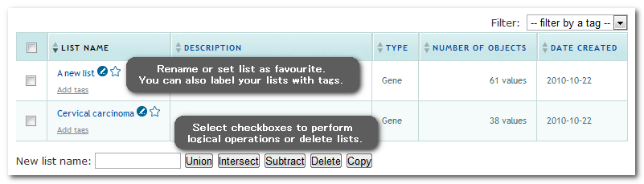
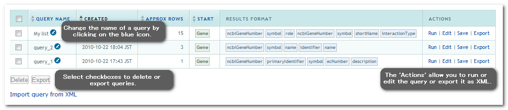
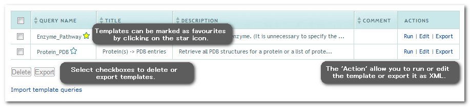

The basics
You can create a MyMine account by logging-in to TargetMine. (You only need to provide an email address and a password to generate an account, there is no other information required.). Creating a myMine account allows you to permanently save lists, queries and templates - the MyMine pages allow you to manage these. Your saved data is always private.
NOTE: Creating accounts is not available for academic version.
Lists
The lists tab shows all your permanently saved lists and any lists you have made this session if you are not logged in. If you are logged in, or if you log-in during a session, any lists you have made will automatically be permanently saved. You can change the name of a list, delete lists and perform logical operations on lists on this page.
Query History
All queries that you run are saved in your Query History with the default name 'query_x' (where x increments for each query run). These queries will only be saved during the time of the current session. To save queries permanently and to import queries, you need to be logged-in. Exporting and saving a query will will not delete it from your query history during that session.
Saved Queries
This page lists all queries that you have saved before. They will be saved permanently. If you import a query with a name identical to an existing query it will get an automatic extension to make it unique, e.g. proteins-1, proteins-2.
![[Mymine Page]](MyMine_savedqueries.png)
Saved Templates
The 'Saved Templates' page provides a list of all templates that you created yourself or have imported. They will be saved permanently. If you import a template query with a name identical to an existing query it will get an automatic extension to make it unique, e.g. proteins-1, proteins-2.
Change Password
This page allows you to change your TargetMine password.